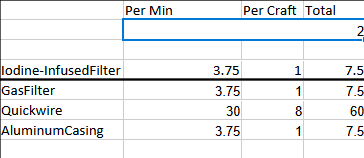
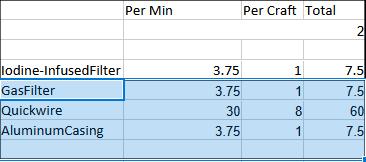

This website generates spreadsheets that contain data about various crafting recipes for the game Satisfactory
The spreadsheet you download will be in the modern Microsoft Excel format (.xlsx)
Across the top of the sheet there will be a series of outlined boxes, each of these represent a single item required to craft the final output.
Below the boxes starting at cell B12 there is a list of "Raw" resource that are required to make the end product. Next to the resource is how much of it per minute is required to make the desired output per minute.
At the top of an item box there is a triple wide cell. This cell represents the number of machines needed to create the required items per minute of this item. This cell can be edited on the very first item box.

The row below the machine box represents any secondary output this particular item recipe may contain.
2 rows below the machine box represents the primary thing the recipe represented by this item box will produce.
The 4 rows beneath the horizontal in the middle of the item box represent the inputs this recipe takes.

The first column in the item box contain the name of the item being produced or consumed.
The second column in the item box contain the number of each item the recipe produces/consumes per minute.
The third column in the item box contain the amount of each item that is consumed/produced in a single craft.
The final column in the item box contains the total amount of each item that is to be produced or is required per minute.
Alternate Recipe Selection system
(converting the recipe data from the game into usable data takes a lot of time and effort)
Ficsmas recipes
If you can lend some assistance to this project, head over to the github repo
Also be sure to report any bugs you may find there
If you want to check out other things that I have done you can check out my website https://cbi-games.org
Also check me out on YouTube